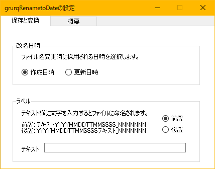

C#で作られた、ファイル名変換ソフトです。
Windows 10(64bit)のみで動作確認しています。
exeファイルにドラッグ＆ドロップして、作成・更新日時にファイル名を変更できます。
また、前後にラベル（定型句）を挿入できます。
設定変更はダブルクリック（通常実行）起動で行なえます。
通常起動すると、オプションで以下の指定ができます。
＞作者または著作権者は、契約行為、不法行為、またはそれ以外であろうと、ソフトウェアに起因または関連し、あるいはソフトウェアの使用またはその他の扱いによって生じる一切の請求、損害、その他の義務について何らの責任も負わないものとします。
Copyright (c)2020 grurq Released under the MIT license
https://opensource.org/licenses/mit-license.php (日本語訳:osdn)
DOBON.NET様よりソースコードを多く参考にさせていただきました。ありがとうございます。
http://dobon.net/vb/index.html